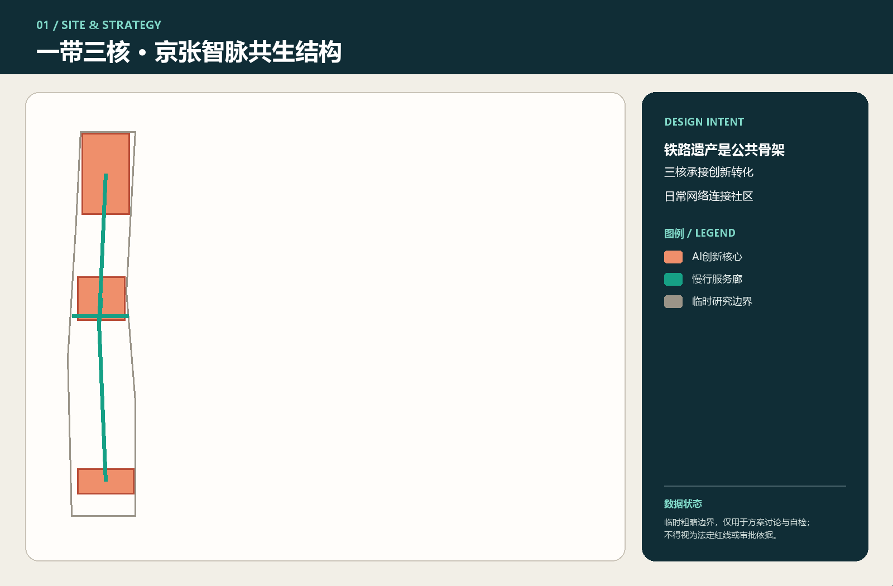
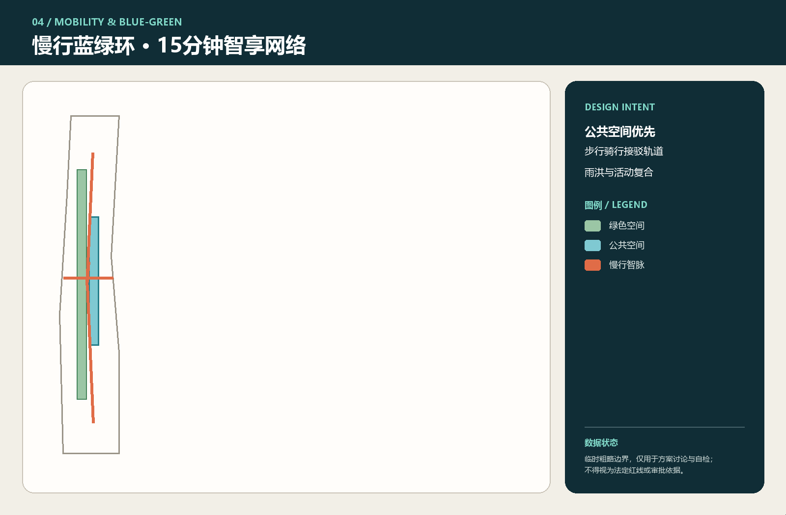

数据状态：本方案使用组织方登记的临时粗略边界，仅供设计讨论与自检，不构成法定红线、审批依据或实施承诺。
研究边界面积11.41 km²
重点片区3 核
概念绿地比12.3%
概念公共空间比7.3%
总览地图 · 三层范围 · 重点区域 · 用地分区

任务覆盖 · AI 场景
- AI服务始终保留非数字替代路径。
- 空间结论可回溯到几何、指标与来源。
- 轻量可逆试点先于重资产建设。
三核分工
众智园：行业验证与开源协作
原点社区：人才生活与成果转化
大钟寺：展示传播与国际链接
交通慢行 · 蓝绿公共空间 · 建筑与更新项目

十景成网
遗产序厅、贡献者星图、端侧算力驿站、AI慢行导航、国际路演客厅、清河低碳创新廊、近校成果转化街、数据要素会客厅、AI生活服务样板街、全球AI活动周路线。
这些均为供专业团队深化的概念建议。
核心指标 · 自检状态 · 假设
核心指标来自同包 GeoJSON 复算；当前自检以 self_check.json 为准。正式边界、控规、市政、权属和文保条件仍是假设清单中的待补项。